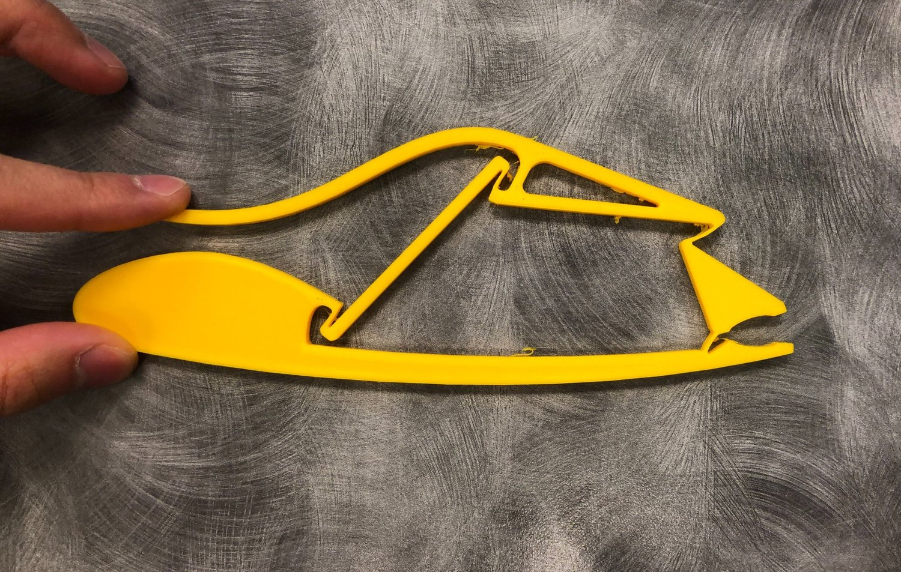
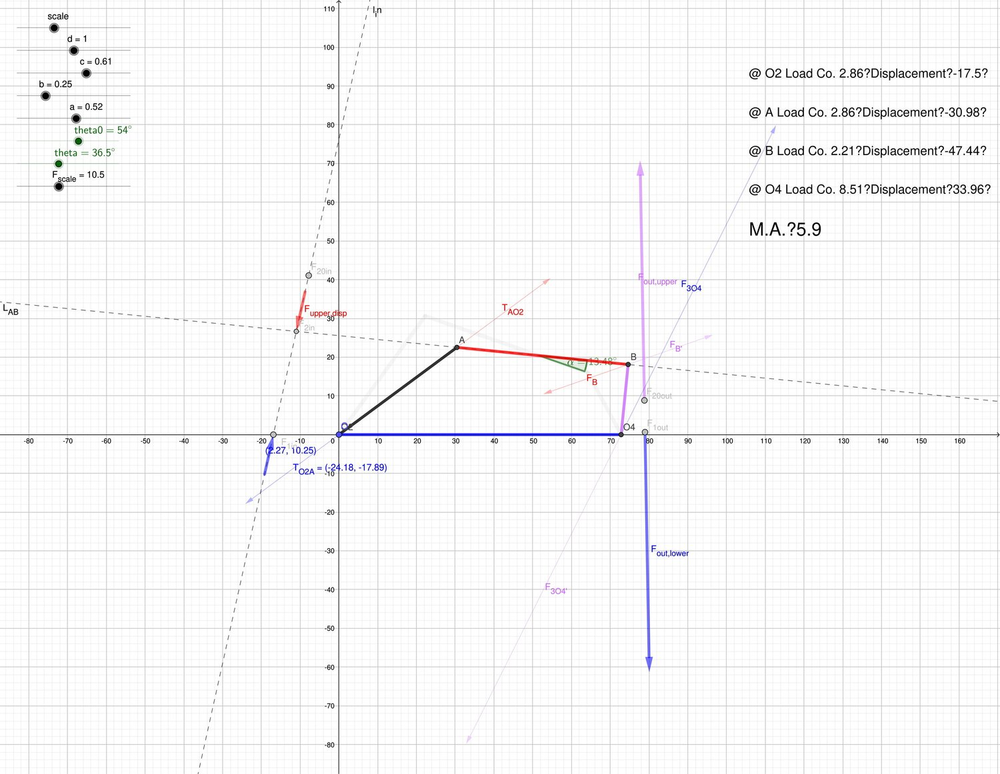

Compliant Gripper Synthesis

To achieve one-piece design, I replaced pin joint with lump compliance. For kinematics, I used GeoGebra to calculate mechanical advanage. Moreover, I coded the GeoGebra so that it automatically analyzed loading condition of each compliant joint. Based on loading condition, the final dimensions of compliant joints were determined.

The GeoGebra file was created 2020 Feb. Maybe you can play with it in this link
Acknowledgement:
Adviced by UMich Prof. Sridhar Kota.
Laser cutting and the FFF 3D printer was provided by UMich Prof. Peter Washabaugh.
Inspired by BYU Prof. Larry Howell.
The compliant joint sizing learnt from Sebastian Linß’s notch flexure hinges paper.